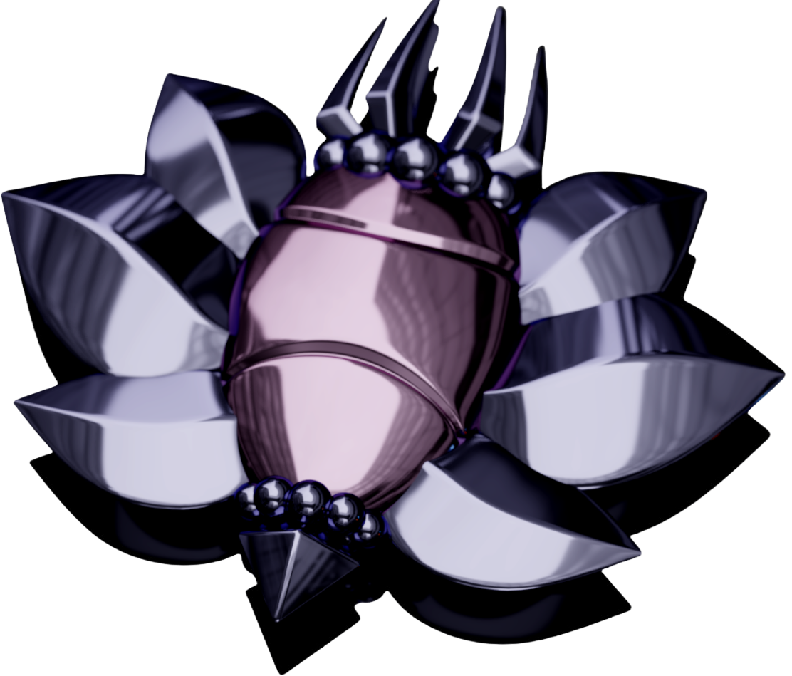

TIMELINE OF EVENTS
Long ago, there was a civilization that worshipped the Void (the dark pit under Hallownest). They built the Soul Totems (picture on the right), the Arcane Eggs, and the Void Idol. The Void, which they worshipped,
has a dislike for beings of light, such as the Pale King and the Radiance, as light weakens it. The Void is also known to be able to interact with bugs similar to the Radiance. They are the first who learned how to harness the power of SOUL.
The cause of their disappearance is unknown.
After them, the main dieties of each tribe appeared. The Radiance was the first, worshipped by the Moth Tribe. They discovered the Dream Realm through SOUL, where the dreams of both living and dead reside.
Unn was worshipped by the Mosskin Tribe, a peaceful bunch that allowed travelers to pass through, contrary to the Mantis Tribe, a ferocious group that respect
only those who can defeat their leaders in combat. Next is the Hive, headed by the Hive Queen, Vespa. They are a group united under the hive mind that attack those possessing foreign blood.
Then there was the Spider Tribe which was ruled by Herrah the Beast, a queen that had outlived her consort. Next were the Snail Shamans, a small group with a skill for SOUL magic, and notice when dream
magic was used on them. Finally, there is the Mushroom Clan, a territorial group that developed their own language that can only be read by equipping the Spore Shroom Charm.


The last diety-like monarch to appear was a Wyrm that shed its body to become the Pale King, who ruled over the bugs in the lower caverns together with his Queen, the White Lady (picture on the left), another diety-like monarch of the origin Root. Similar to the Radiance, the Pale King was a being of Light who was able to give bugs intelligence and independent thought through his own power. In exchange for this, the Pale King asked for the worship of the bugs under his rule. He had one goal; to unite the bugs who were previously divided. The Mosskin, the Mushroom Clan, and the Moth Tribe all accepted his rule, while the Mantis Tribe, the Spider Tribe and the Hive remained seperate from the Kingdom. The Five Great Knights were guards hand-picked by the king to protect the kingdom: Ze'mer (Grey Mourner), Dryya, Isma, Hegemol, and Ogrim (Dung Defender).
The Moth tribe was one of those who joined the Pale King's kingdom. Their original god, the Radience, was not happy about this. She started invading the minds of all those within and outside the Kingdom, trying to convince them to keep worshipping her and driving them insane. This phenomenon became known as the "Infection". In order to alleviate the situation, the Pale King and the White Lady devised a plan in order to contain it: create a 'Vessel' that could contain the Radience's influence in its mind. It took hundreds of tries to create the Hollow Knight (HK), who was then raised as the Pale King's child and grew up to be locked up in the Black Egg in order to become a container for the Infection, with the seals of the Dreamers keeping the Radience in its mind. However, the HK was no longer hollow by the time it was to be used as a vessel (meaning it developed a mind and emotions), dooming the Kingdom. The HK was able to contain the Infection for some time, but when the Knight arrives a few decades later, it finds everything in ruin. The Knight was also a Vessel, one born the same time the current HK was, and unlike the HK it is truly hollow. Its goal is to contain or eradicate the Infection completely, which leads us to the present, where the Knight is trying to destroy all the seals on the Black Egg, defeat the Dreamers, and either 1. Take the place of the HK, 2. Defeat the Radience in the HK's mind, 3. Go to the Godhome and defeat the True Raidience there with the help of the Void entity or 4. Number 3 but using a delicate flower to placate the Void.